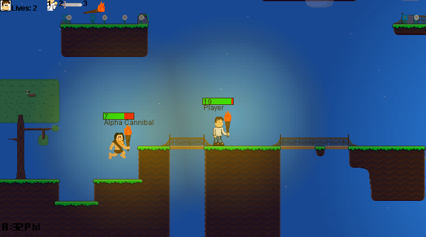

Arvopia 0.4!
(Something about light)


One of the bigger additions to was a change and addition in GUIs. The title screen was improved, as well as an additional options menu, instructions menu, changelog menu and world chooser menu.
Combat has become more of a hand-hand combat sort of thing in 0.4. You need to be within a certain range of an entity to be able to hit it, and you are given 3 different ways to do so: Using a Sword, Torch, or your own hands.

The biggest addition with this update, starting with the sun and the moon. The sun and the moon are added as light sources and used to introduce the time system of the game. With a clock in the bottom-left corner as well.
Version 0.4
Arvopia 0.4 is definitely one of the biggest updates released, expanding on older ideas set in 0.2 and 0.3, but also building up new massive ideas to grow in the future.
GUI Additions
One of the bigger additions to was a change and addition in GUIs. The title screen was improved, as well as an additional options menu, instructions menu, changelog menu and world chooser menu.
The options menu had sliders for FPS, Light Quality, Time Speed, Volume, Scale, and a toggle button to make sure the sliders work. Each slider does about what you'd expect. The instructions and changelog menus have just text with their respective texts. And the world chooser menu allows you to select between one of two worlds that you can play on.
Combat
Combat has become more of a hand-hand combat sort of thing in 0.4. You need to be within a certain range of an entity to be able to hit it, and you are given 3 different ways to do so: Using a Sword, Torch, or your own hands.
Additionally to combat mechanics, Cannibals were introduced to the game in 0.4, giving the game an actual challenge.